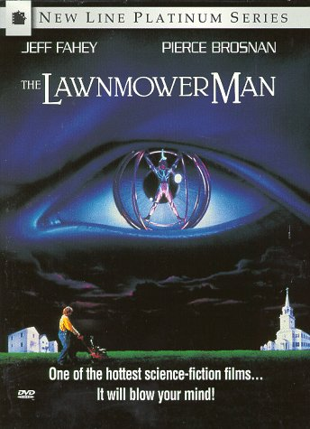

Movie review by : SFAM
Year : 1992
Directed by : Brett Leonard
Written by : Brett Leonard, Gimel Everett & Stephen King (original short story)
Degree of Cyberpunk visuals : High
Correlation to Cyberpunk themes : High
Rating : 5/10
Key cast members :

Overview: Pierce Brosnan as 007 stars in this scifi espionage flick about a guy with a lawnmower who tries to take over the world... Well, that's not exactly it, but close :)
This might be another one of those I'm out to lunch on, but I'm guessing most have seen this flick. Lawnmower Man was originally derived from a Stephen King novel (although considering that King sued to have his name removed, we might infer he wasn't thrilled with this movie), and is about a genius government funded scientist (Brosnan) who's doing research on increasing human intelligence through using drug-assisted virtual reality experiments. His research, originally done on chimps, was cut off when a chimp goes wild, so instead of giving up, he does the research in his basement, using the local lawnmower dullard as his test subject.
Over time, the Lawnmower guy becomes awesomely intelligent, so much so that he grows more powerful than anyone could have possibly imagined. So much so, in fact, that he becomes a potential threat to mankind!
The Bottom Line: Lawnmower man is an early entree into 3D graphics. The graphics were rather decent at the time but certainly looks dated now. It's still a nice scifi thriller that fully qualifies as a cyberpunk movie in every way possible. I enjoy this, and generally like Brosnan movies, but maybe its just a guilty pleasure of mine. Whereas I find it watchable in a cheesy sort of way, I can certainly imagine others scoffing at some of the insane plot points (like going from a multi-million dollar a year funded defense project, to getting better results in your basement). But even if you find this one watchable, it's a pretty clear bet that you won't stand a chance at liking the sequel.